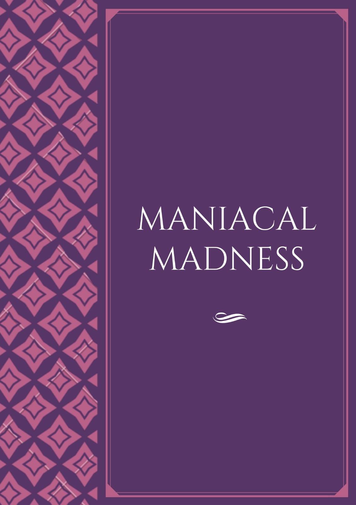

MANIACAL MADNESS

Charging, Stamping it came cramping, cramping at the wooden floor.
Dancing, Stancing I was glancing, glancing at the unknown.
All alone on my own. I was just a little child, a man who went wild. It was always with me that smile.
The smile that haunts me took over my last mile.
I was sad and mad after the big fall. My fault it was I would let the Lions Roar.
Puppet, Puppet is all I was to the one laughing at the door.
As it ceased it grew clear, there was a voice whispering in my ear,”Play with your feelings like puppet on strings,
Turn your worst nightmares into your favourite dreams”
As the days passed I could hardly survive. Was It worth fighting without a pause.
It felt like a war without a cause. Who was I , me ,it ,we,us.
It was us from now. Me turned into we. I always pondered how I could be free. From this tyrant who turned into me.
From this tyrant roaming free. From this tyrant I couldnt see. From this tyrant who was ME. from this tyrant who was me.